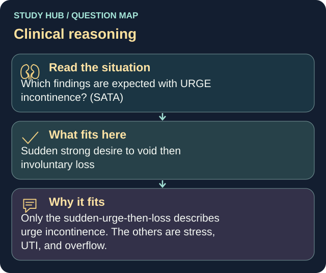

Which findings are expected with URGE incontinence? (SATA)
Answer
Sudden strong desire to void then involuntary loss
Reasoning
Only the sudden-urge-then-loss describes urge incontinence.
Clinical detail
The others are stress, UTI, and overflow.
Why the other answers do not fit
- Small leakage with coughing/sneezing
- Frequency and dysuria
- Waking to urinate at night
- Incomplete emptying despite voiding
Shared reasoning for choices without a separate note: Only the sudden-urge-then-loss describes urge incontinence. The others are stress, UTI, and overflow.
